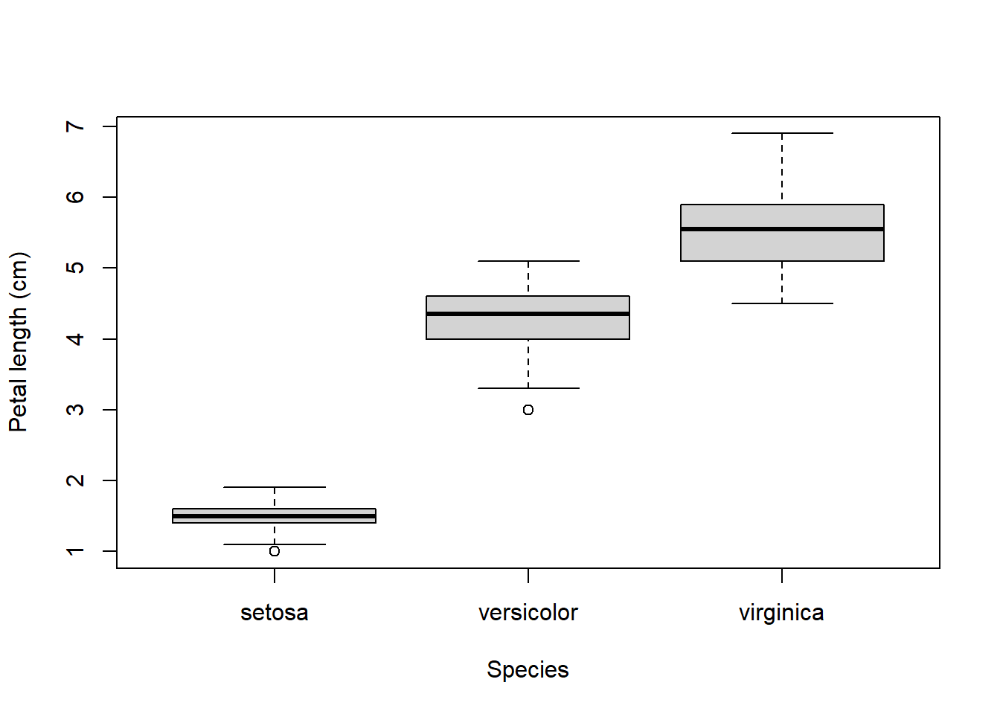
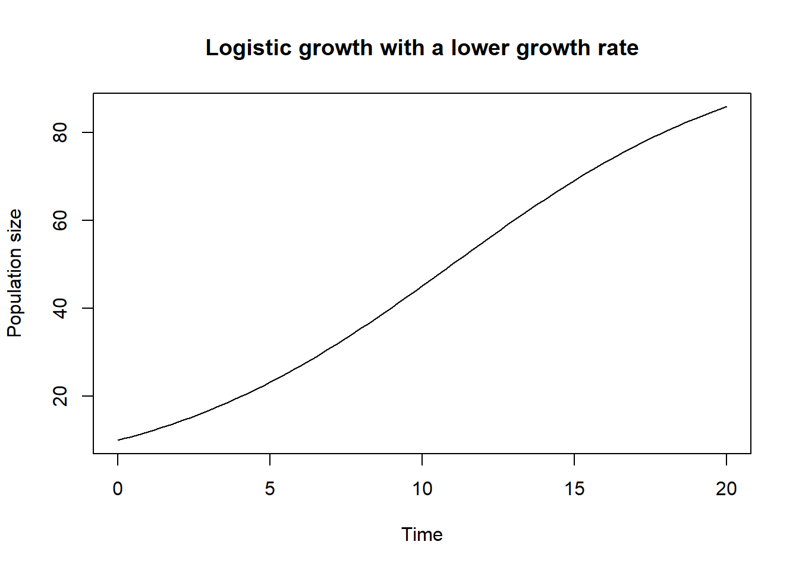
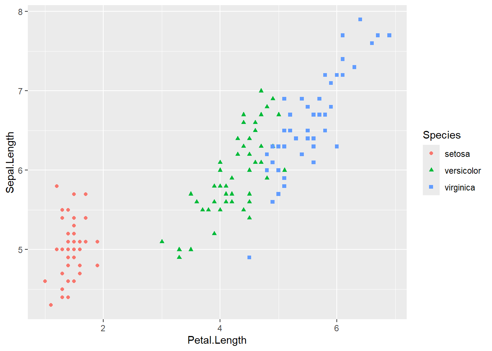
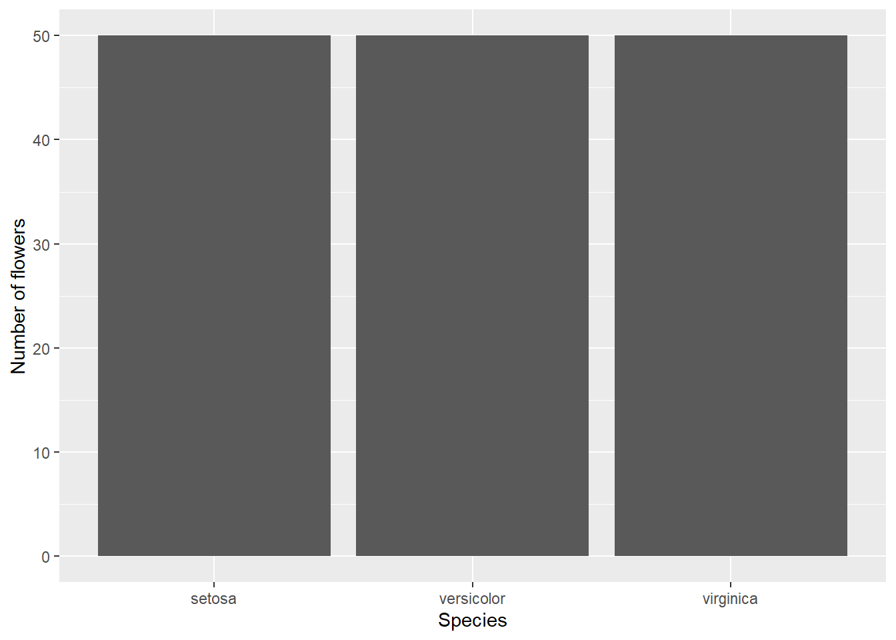

2 + 2[1] 4After completing the tutorial you will be able to:
Create, run, and source R scripts, and organize work in an RStudio project.
Use basic R syntax, functions, variables, and common scalar types.
Create and manipulate vectors, factors, and data frames, including selecting and summarizing data.
Make basic plots with base R graphics and ggplot2.
Use if statements, for loops, and vectorized operations.
Write and use simple functions.
Import tabular data and use dplyr to filter, transform, and summarize it.
Install and load packages, and find help for R functions.
This tutorial was written in collaboration with AI tools, including GPT-5.6 Luna and Kimi K3, but it was designed and edited by a human.
You may use AI as a tutor to help you:
If you use AI to generate the solutions to the exercises without even trying yourself first, you will not learn the material and the course will become much harder for you (especially the exam when AI is not there to help you).
AI tools hallucinate and make mistakes, you are responsible for your learning and assignments, AI tools are not liable.
Please go through the tutorial in order, as each section builds on the previous one. Run all the code examples in your own R session (do not just read), and try to understand what each line of code does.
I expect this tutorial to take less than 5 h, depending on your prior knowledge of R and programming.
We will assume that you have installed R and RStudio on your computer. If you haven’t done so, please follow the installation instructions for your operating system.
In most of the sections we will use built-in datasets or small data examples. In one of the latest sections we will learn how to import external data into an R session. That will be the norm for the rest of the course. You will get these files during the course.
R is a programming language designed mostly for statistics and data analysis. It is free and open source, and has a large community of users and developers. Much functionality comes pre-installed with R, but there are also thousands of additional packages that can be installed to extend R’s functionality.
R is interactive, meaning that you can type commands on a console and get immediate feedback. This is useful for quickly testing ideas, but for any real work you should write your code in a script file and run it from there. This way you can save your work and re-run it later, and you can also share your code with others.
RStudio is a program to help you write R code. It is also free and open source, and it is the most popular (but not only) way to use R. RStudio offers two main features:
Projects: To organize all the files for your data analysis
Panels: To allow you write R code and display output
Your analyses will also involve multiple data files, output figures and possibly multiple script files. To keep your work organized, you should create a new RStudio project for each project (e.g., your thesis, a class assignment, etc.).
Instructions on how to create an RStudio project can be found here
Following the instructions in the link above, create a new RStudio project that you will use for this tutorial. You can use any name you like and save it anywhere on your drive.
Ignore the different Project options just go with the defaults. Make sure that you are working within the project for the remainder of this tutorial.
RStudio contains multiple panels.
Find all the panels mentioned above and check if they contain any information (most will not).
Try to resize the panels.
If you can’t see a panel, you can open it from the View menu.
We will start typing very simple R code in the console, to get a feeling of the syntax and the execution loop of R.
R code is made of commands. An R command is an instruction you give the computer to perform some operation. If you type the R command in the console and press [Enter] you will get back the result of the operation. For example, at the command prompt >, type in 2+2 and hit Enter:
2 + 2[1] 4To do anything useful, you have to store the results from calculations by assigning them to variables using =. We always use = for assignment in this course. For example:
a = 2 + 2R automatically creates the variable a and stores the result (4) in it, but it doesn’t print anything. To ask R to print the value, just type the variable name:
a[1] 4The [1] at the beginning of the line is just R printing an index of the answer. This is more useful for answers with multiple elements that span multiple lines.
Try the following:
1:40 [1] 1 2 3 4 5 6 7 8 9 10 11 12 13 14 15 16 17 18 19 20 21 22 23 24 25
[26] 26 27 28 29 30 31 32 33 34 35 36 37 38 39 40This created a vector of numbers from 1 to 40 and now you can see the index at the beginning of each line.
You can break a command into multiple lines anywhere that R can tell you haven’t finished your command. In that case, R will give you a “continuation” prompt (+) to let you know that it expects more input. Try the following incomplete command:
a = 3*(4 -Error in parse(text = input): <text>:2:0: unexpected end of input
1: a = 3*(4 -
^R expects a second number after the - symbol and to close the parenthesis. It will keep giving you the continuation prompt until you finish the command:
2)Error in parse(text = input): <text>:1:2: unexpected ')'
1: 2)
^You will sometimes see the continuation prompt when you don’t expect it. This indicates a bug in your code (often you forgot to close a parenthesis). You can always hit the Escape key to cancel the command.
Variable names in R can only contain:
And also
x1 is valid, but 1x is not)Abc and abc are different variables)NA, TRUE, FALSE, if, else, for, while, etc.) and cannot be used as variable names.R does basic math calculations like in a calculator with the symbols:
+ for addition- for subtraction* for multiplication/ for division^ for exponentiationFor example:
x = 5
y = 2
z1 = x*y
z2 = x/y
z3 = x^y
z1[1] 10z2[1] 2.5z3[1] 25There is a consistent order of preference of operations in R, but when in doubt just use parenthesis.
R also has many built-in mathematical functions that operate on variables such as:
abs: Absolute values.cos, sin and tan: For trigonometry (arguments always in radians).exp: Exponential function.log, log10: Natural logarithm and logarithm base 10.sqrt: Square root.All functions in R follow the same syntax: the function name followed by parentheses containing the inputs to the function (called arguments). For example:
abs(-1)[1] 1sqrt(4)[1] 2Many functions accept more than one argument, separated by commas. Some arguments are optional and have a default value that is used unless you specify otherwise. For example, log computes the natural logarithm by default, but you can pass a second argument to use a different base:
log(10) # natural logarithm (default)[1] 2.302585log(10, base = 10)[1] 1You can find the available arguments of a function (and their defaults) in the help pages, see R documentation.
Compute the following operations in R:
\(\frac{2^7}{2^7 - 1}\) and compare it with \(\left({1 - \frac{1}{2^7}}\right)^{-1}\)
Please create a new R script file in RStudio using the available menu options and save it inside the project folder. We will write the rest of the code of this tutorial in this file.
Script files often have comments. These are lines that start with a # symbol and are ignored by R (they are meant for humans). You can use comments to explain what your code does, or to temporarily disable a line of code. For example, go to the top of the file and type the following:
# Chapter 1 of Ecological Modelling and DataYou will see that the line is colored (by default in green) to highlight that it is a comment. Let’s add a simple arithmetic operation in the next line:
a = 2 + 2How do we execute this R command? There are multiple ways to do this:
Select the code with the mouse and (i) click the Run button in the top right corner of the script panel or (ii) press Ctrl + Enter (or Cmd + Enter on an Apple device).
Place the cursor on the line and click the Run button or press Ctrl + Enter.
The first approach will send the select code to the console and execute it (as if you were to copy and paste it there). The second approach will automatically recognize the entire command (even if it is multiline) and send it to the console for execution.
There is a third option: to execute the entire script file, in the order in which it is written. This is called sourcing the script. To do this, click the Source button in the top right corner of the toolbar.
A package is an R project made of:
A collection of R functions and sample data
Written documentation for functions and data (see R documentation below)
There are two different steps when using a package:
Installing a package: This is done only once, and it downloads the package from the internet and installs it in your computer.
Loading a package: This is done every time you start a new R session, and it makes the functions and data in the package available for you to use.
The best way to install a package is to use the Packages panel in RStudio. Go to the panel, click on Install, and the select the package of interest by typing the name.
Install the package ggplot2 using the Packages panel in RStudio.
Loading a package is done by using the library function with the name of the package as argument. For example, to load the ggplot2 package, you would type:
library(ggplot2)I recommend to always load the packages you will use at the beginning of your script file, before any actual analysis code, so you can write all the library() commands at the start of the script.
So far we have only worked with numbers, but R can store and manipulate other kinds of data. Every value in R has a data type, which determines what operations you can do with it. Here we introduce the most basic types: values that hold a single element (often called scalars). Later we will see how to combine them into vectors and data frames.
Numeric values are numbers, either with or without decimals. R does not make an important distinction between integers and decimal numbers for everyday work:
x = 5
y = 2.5You can check the type of any value with the class function:
class(x)[1] "numeric"class(y)[1] "numeric"Both are "numeric", and all the mathematical operations and functions we saw earlier work on them.
Text data is stored as character values (often called strings). Strings are always enclosed in quotes, either single (') or double ("):
species = "Quercus robur"
class(species)[1] "character"You cannot do math with strings, but there are many functions to manipulate them. A useful one is paste, which joins strings together:
genus = "Quercus"
species = "robur"
paste(genus, species)[1] "Quercus robur"Note that a number inside quotes is a string, not a number:
a = "5"
a + 1 # this produces an errorError in `a + 1`:
! non-numeric argument to binary operatorLogical values can only be TRUE or FALSE (always in capital letters, and without quotes). They typically result from comparisons using the operators:
== equal to (note the double =; a single = is assignment!)!= not equal to<, <= less than, less than or equal to>, >= greater than, greater than or equal toFor example:
x = 5
x > 3[1] TRUEx == 3[1] FALSEclass(x > 3)[1] "logical"Logical values can be combined with & (and), | (or) and ! (not):
(x > 3) & (x < 10)[1] TRUE(x < 3) | (x > 10)[1] FALSE!(x == 5)[1] FALSELogical values will become very useful later, for example in if-statements and for selecting parts of your data.
Factors are a special data type for categorical data: values that can only take a limited set of possibilities, called levels. This is very common in ecological data, for example a treatment in an experiment or a habitat type:
treatment = factor("control")
treatment[1] control
Levels: controlFactors behave in some ways like strings, but R keeps track of the allowed levels. We will come back to factors when we discuss vectors and data frames, where they are most useful. For now, just remember: use strings for free text, and factors for variables with a fixed set of categories.
NAReal ecological data almost always contains missing observations: a sensor failed, a sample was lost, a measurement was not taken. R represents missing values with the special value NA (without quotes):
biomass = NANA is contagious: almost any operation involving NA returns NA, because the result is unknown:
biomass + 1[1] NAThis also affects comparisons. To test whether a value is missing you cannot use == NA; you must use the function is.na:
biomass == NA # does not work as you might expect[1] NAis.na(biomass) # the correct way[1] TRUEMany functions, such as mean, return NA if the data contains missing values, and offer an argument na.rm = TRUE to ignore them. We will see examples of this later.
Create a variable with the name of your study species (as a string) and a variable with its average body mass (as a number). Check the type of both with class.
Use paste to print the sentence: “The average body mass of species is mass g”.
Define a = 10 and b = 4. Use comparison operators to check:
a is greater than ba is equal to ba is between 5 and 15Assign NA to a variable temp. What is the result of temp > 20? What is the result of is.na(temp)?
The data types we saw before hold a single value, but in practice we always work with collections of values: all the trees in a plot, all the dates in a time series, etc. The most basic data structure in R is the vector: a sequence of values of the same type.
You create a vector with the function c (for combine):
mass = c(2.1, 3.4, 1.8, 4.0)
mass[1] 2.1 3.4 1.8 4.0class(mass)[1] "numeric"Note that the class is still numeric. In fact, R treats variables with single values as vectors of length 1.
We have already seen another way to create numeric vectors: the : operator creates a sequence of integers:
1:10 [1] 1 2 3 4 5 6 7 8 9 10For more control use seq, which creates a sequence with a given step size:
seq(from = 0, to = 1, by = 0.25)[1] 0.00 0.25 0.50 0.75 1.00And rep repeats values:
rep("control", times = 4)[1] "control" "control" "control" "control"Vectors can be of any of the data types we saw before:
species = c("Quercus robur", "Fagus sylvatica", "Quercus robur")
alive = c(TRUE, TRUE, FALSE)
class(species)[1] "character"class(alive)[1] "logical"If you combine values of different types, R silently coerces everything to a single type. This is a common source of bugs:
c(1, 2, "3")[1] "1" "2" "3"You can find the length of a vector with length:
length(mass)[1] 4One of the most useful features of R is that mathematical operations and functions work on entire vectors at once, applied element by element:
mass * 2[1] 4.2 6.8 3.6 8.0mass + 1[1] 3.1 4.4 2.8 5.0log(mass)[1] 0.7419373 1.2237754 0.5877867 1.3862944Operations between two vectors of the same length are also done element by element:
height = c(10, 12, 8, 15)
mass / height[1] 0.2100000 0.2833333 0.2250000 0.2666667There are many useful functions that take a vector and return a single summary value:
sum(mass)[1] 11.3mean(mass)[1] 2.825sd(mass) # standard deviation[1] 1.046821min(mass)[1] 1.8max(mass)[1] 4If the vector contains missing values, these functions return NA. Use the argument na.rm = TRUE to ignore them:
mass2 = c(2.1, NA, 1.8, 4.0)
mean(mass2)[1] NAmean(mass2, na.rm = TRUE)[1] 2.633333You can select elements of a vector with square brackets [ ]. Indexing in R starts at 1 (not 0 like in some other languages):
mass[1] 2.1 3.4 1.8 4.0mass[1] # first element[1] 2.1mass[2:3] # elements 2 and 3[1] 3.4 1.8A negative index excludes elements:
mass[-1] # everything except the first element[1] 3.4 1.8 4.0You can also index with a logical vector. This is extremely useful for selecting the parts of your data that meet some condition:
mass > 2 # a logical vector[1] TRUE TRUE FALSE TRUEmass[mass > 2] # only the elements where the condition is TRUE[1] 2.1 3.4 4.0Combined with is.na, this lets you remove missing values:
mass2[1] 2.1 NA 1.8 4.0mass2[!is.na(mass2)][1] 2.1 1.8 4.0Factors become really useful as vectors. Imagine a vector of treatments in an experiment:
treatment = factor(c("control", "fertilized", "control", "fertilized"))
treatment[1] control fertilized control fertilized
Levels: control fertilizedlevels(treatment)[1] "control" "fertilized"R knows that this variable can only take the two levels, and statistical functions will treat it appropriately later on.
Create a vector dbh with the diameter at breast height of 6 trees: 12.5, 8.3, 15.1, NA, 9.7, 11.2. Check its length.
Compute the mean and standard deviation of dbh, ignoring the missing value.
Use indexing to select:
NA!)Create a factor vector plot indicating that the first three trees are in plot “A” and the last three in plot “B”. What are its levels?
A matrix is a rectangular, two-dimensional data structure. Like a vector, all elements of a matrix must have the same type. Matrices are useful for ecological data such as species abundances across several sites.
You create a matrix with the matrix function:
abundance = matrix(
c(12, 8, 15,
5, 11, 9,
20, 13, 18),
nrow = 3,
byrow = TRUE
)
abundance [,1] [,2] [,3]
[1,] 12 8 15
[2,] 5 11 9
[3,] 20 13 18The argument nrow specifies the number of rows. By default, matrix fills the matrix by columns; byrow = TRUE makes it fill the matrix by rows.
You can add row and column names:
rownames(abundance) = c("Quercus robur", "Fagus sylvatica", "Pinus sylvestris")
colnames(abundance) = c("plot_A", "plot_B", "plot_C")
abundance plot_A plot_B plot_C
Quercus robur 12 8 15
Fagus sylvatica 5 11 9
Pinus sylvestris 20 13 18Useful functions for inspecting a matrix include:
dim(abundance) # number of rows and columns[1] 3 3nrow(abundance)[1] 3ncol(abundance)[1] 3length(abundance) # total number of elements[1] 9Matrices use the same indexing system as data frames, with a row index and a column index separated by a comma:
abundance[1, 2] # row 1, column 2[1] 8abundance["Quercus robur", ] # one entire rowplot_A plot_B plot_C
12 8 15 abundance[, "plot_B"] # one entire column Quercus robur Fagus sylvatica Pinus sylvestris
8 11 13 abundance["Fagus sylvatica", "plot_C"][1] 9Leaving one index empty selects all rows or all columns. Matrix operations are usually vectorized:
abundance * 2 plot_A plot_B plot_C
Quercus robur 24 16 30
Fagus sylvatica 10 22 18
Pinus sylvestris 40 26 36abundance + 1 plot_A plot_B plot_C
Quercus robur 13 9 16
Fagus sylvatica 6 12 10
Pinus sylvestris 21 14 19abundance > 10 plot_A plot_B plot_C
Quercus robur TRUE FALSE TRUE
Fagus sylvatica FALSE TRUE FALSE
Pinus sylvestris TRUE TRUE TRUEThe functions rowSums and colSums calculate totals for each row or column:
rowSums(abundance) Quercus robur Fagus sylvatica Pinus sylvestris
35 25 51 colSums(abundance)plot_A plot_B plot_C
37 32 42 You can transpose a matrix, exchanging its rows and columns, with t:
t(abundance) Quercus robur Fagus sylvatica Pinus sylvestris
plot_A 12 5 20
plot_B 8 11 13
plot_C 15 9 18Unlike a data frame, all elements in a matrix must have the same type. If you combine numbers and character values, the numbers are converted to character values, just as they are in a vector.
cover containing the percentage cover of three plant species in three plots:| species | plot_A | plot_B | plot_C |
|---|---|---|---|
| grass | 35 | 42 | 28 |
| moss | 12 | 18 | 15 |
| fern | 5 | 7 | 9 |
Add suitable row and column names.
Calculate the total cover of each species and the total cover in each plot.
Select all species with a cover greater than 20 in any plot.
A list is a collection of objects. Unlike a vector or matrix, the elements of a list do not have to be the same type or length. A list can contain numbers, character strings, logical values, vectors, matrices, data frames, or even other lists.
For example, we can store information about one tree in a list:
tree = list(
species = "Quercus robur",
dbh = 25.4,
alive = TRUE,
measurements = c(24.8, 25.1, 25.4)
)
tree$species
[1] "Quercus robur"
$dbh
[1] 25.4
$alive
[1] TRUE
$measurements
[1] 24.8 25.1 25.4class(tree)[1] "list"length(tree)[1] 4names(tree)[1] "species" "dbh" "alive" "measurements"str(tree)List of 4
$ species : chr "Quercus robur"
$ dbh : num 25.4
$ alive : logi TRUE
$ measurements: num [1:3] 24.8 25.1 25.4The components of a named list can be accessed with $:
tree$species[1] "Quercus robur"tree$dbh[1] 25.4tree$measurements[1] 24.8 25.1 25.4They can also be accessed with double square brackets:
tree[["species"]][1] "Quercus robur"tree[["dbh"]][1] 25.4The single-square-bracket form returns a list containing the selected component, whereas $ and [[ ]] return the component itself:
tree["dbh"] # a list containing dbh$dbh
[1] 25.4tree[["dbh"]] # the numeric value of dbh[1] 25.4You can add new components or modify existing ones using $:
tree$site = "plot_A"
tree$dbh = 26.0
tree$species
[1] "Quercus robur"
$dbh
[1] 26
$alive
[1] TRUE
$measurements
[1] 24.8 25.1 25.4
$site
[1] "plot_A"Lists are especially useful for grouping related results. For example, a model run might contain its parameters, the time points, and the simulated population in one object:
model_run = list(
parameters = c(N0 = 20, r = 1.1),
time = 0:5,
population = c(20, 22, 24.2, 26.62, 29.282, 32.2102)
)
model_run$parameters N0 r
20.0 1.1 model_run$time[1] 0 1 2 3 4 5model_run$population[1] 20.0000 22.0000 24.2000 26.6200 29.2820 32.2102Lists are commonly used when a function needs to return several related results at once. They can also contain other lists, allowing more complex objects to be organized hierarchically.
Create a list called survey containing:
Inspect the list with str and names.
Select the mass of the second species and calculate the mean mass.
Add the survey date as a new component.
Create a list called model_run with a named vector of parameters, a vector of time points, and a vector of population sizes. Compare model_run["population"] with model_run[["population"]].
Vectors can only hold one type of data, but an ecological dataset typically mixes numbers (measurements) with text (species names) and categories (treatments, sites). The data structure for this is the data frame: a table where each column is a vector (of possibly different type) and each row is an observation. Most of the data you will load into R will be stored as a data frame.
You create a data frame with the function data.frame, giving each column a name:
trees = data.frame(
species = c("Quercus robur", "Fagus sylvatica", "Quercus robur", "Pinus sylvestris"),
dbh = c(12.5, 8.3, 15.1, 9.7),
alive = c(TRUE, TRUE, FALSE, TRUE)
)
trees species dbh alive
1 Quercus robur 12.5 TRUE
2 Fagus sylvatica 8.3 TRUE
3 Quercus robur 15.1 FALSE
4 Pinus sylvestris 9.7 TRUEYou can inspect the structure of a data frame with a few useful functions:
nrow(trees) # number of rows[1] 4ncol(trees) # number of columns[1] 3names(trees) # column names[1] "species" "dbh" "alive" str(trees) # structure: types of all columns at once'data.frame': 4 obs. of 3 variables:
$ species: chr "Quercus robur" "Fagus sylvatica" "Quercus robur" "Pinus sylvestris"
$ dbh : num 12.5 8.3 15.1 9.7
$ alive : logi TRUE TRUE FALSE TRUEhead(trees) # first rows (useful for large datasets) species dbh alive
1 Quercus robur 12.5 TRUE
2 Fagus sylvatica 8.3 TRUE
3 Quercus robur 15.1 FALSE
4 Pinus sylvestris 9.7 TRUEThe most common way to get a column is with the $ operator, which returns it as a vector:
trees$dbh[1] 12.5 8.3 15.1 9.7mean(trees$dbh)[1] 11.4You can also index data frames with square brackets, but now you need two indices separated by a comma: [rows, columns]. Leaving one of them empty selects everything along that dimension:
trees[1, 2] # row 1, column 2[1] 12.5trees[1, ] # all columns of row 1 species dbh alive
1 Quercus robur 12.5 TRUEtrees[, 2] # all rows of column 2[1] 12.5 8.3 15.1 9.7trees[, "dbh"] # columns can also be selected by name[1] 12.5 8.3 15.1 9.7Just like with vectors, you can select rows with a logical condition. This is how you will most often subset your data:
trees[trees$dbh > 10, ] species dbh alive
1 Quercus robur 12.5 TRUE
3 Quercus robur 15.1 FALSEtrees[trees$species == "Quercus robur", ] species dbh alive
1 Quercus robur 12.5 TRUE
3 Quercus robur 15.1 FALSEtrees[trees$alive == TRUE, ] species dbh alive
1 Quercus robur 12.5 TRUE
2 Fagus sylvatica 8.3 TRUE
4 Pinus sylvestris 9.7 TRUEYou can add a new column simply by assigning to a new name with $:
trees$basal_area = pi * (trees$dbh / 2)^2
trees species dbh alive basal_area
1 Quercus robur 12.5 TRUE 122.71846
2 Fagus sylvatica 8.3 TRUE 54.10608
3 Quercus robur 15.1 FALSE 179.07864
4 Pinus sylvestris 9.7 TRUE 73.89811And you can modify existing columns in the same way, for example to convert units:
trees$dbh = trees$dbh / 100 # from cm to mbirds with the following data:| species | mass (g) | site |
|---|---|---|
| Parus major | 18.5 | A |
| Parus major | 17.9 | B |
| Cyanistes caeruleus | 11.2 | A |
| Cyanistes caeruleus | NA | B |
Make site a factor.
How many rows and columns does the data frame have? Check its structure with str.
Compute the mean body mass, ignoring missing values.
Select all rows for Parus major and site “A”.
Add a column mass_kg with the body mass in kilograms.
Visualizing your data is one of the first things you should do in any analysis: plots reveal patterns, outliers and data entry errors that summary statistics can hide. R has two main systems for making plots:
Base R graphics: the plotting functions that come built into R. They are quick to use and ideal for exploratory plots: you type one command and immediately see your data. They also work with different data types (vectors, matrices, data frames) and are very flexible, but the syntax is not always consistent and it can be hard to make complex plots.
ggplot2: a package that implements a systematic “grammar of graphics”. Plots are built by adding components layer by layer. It requires a bit more code and are meant to work with data frames, but produces publication-quality figures and makes complex plots (groups, facets, etc.) much easier.
If you want to make sense of a complex dataset, I recommend to use ggplot2 from the start as it is more productive. When you are working with simulations or ad-hoc calculations, base R graphics will work better. But at the end of the day, it is a matter of personal preference and you should use whatever works best for you (the more you use it, the better you’ll get).
Make sure the ggplot2 package is loaded (you may have to install first!):
library(ggplot2)For the examples we will use the built-in iris dataframe (these are datasets loaded in the background, you bring them to your session by just referring to their names). You can summarise the content of a dataframe with summary:
summary(iris) Sepal.Length Sepal.Width Petal.Length Petal.Width
Min. :4.300 Min. :2.000 Min. :1.000 Min. :0.100
1st Qu.:5.100 1st Qu.:2.800 1st Qu.:1.600 1st Qu.:0.300
Median :5.800 Median :3.000 Median :4.350 Median :1.300
Mean :5.843 Mean :3.057 Mean :3.758 Mean :1.199
3rd Qu.:6.400 3rd Qu.:3.300 3rd Qu.:5.100 3rd Qu.:1.800
Max. :7.900 Max. :4.400 Max. :6.900 Max. :2.500
Species
setosa :50
versicolor:50
virginica :50
This represents biometric measurements on flowers from three species.
All base R plots are made with a single function call, and the plot appears immediately in the Plots panel.
The workhorse function is plot, which shows the relationship between two numeric variables. They use the formula syntax y ~ x (read as “y as a function of x”). You can assign groups to color (col) and point shape (pch) if they are stored as factors and you convert them to numbers:
plot(Sepal.Length~Petal.Length, data = iris, col = as.numeric(Species), pch = as.numeric(Species))
You can customize the axis labels with xlab and ylab:
plot(Sepal.Length~Petal.Length, data = iris,
col = as.numeric(Species), pch = as.numeric(Species),
xlab = "Petal Length (cm)",
ylab = "Sepal length (cm)")
To see the distribution of a single numeric variable, use hist:
hist(iris$Petal.Length, xlab = "Petal length (cm)")
Boxplots are the standard way to compare a numeric variable across groups. You also use a formula but the x is always the grouping variable:
boxplot(Petal.Length ~ Species, data = iris, ylab = "Petal length (cm)")
Bar plots display counts or values per category. For example, we can plot the number of values per species (we can do this with the table function):
counts = table(iris$Species)
barplot(counts, ylab = "Number of flowers")
Base R plots can be customized extensively with many arguments (colors, point shapes, axis limits…), but every customization requires you to know the right argument. The easiest way to learn is to just ask an AI too (see note on AI usage early on) or a search engine to find a blog.
Insert this after the Bar plots subsection and before the paragraph beginning “Base R plots can be customized…”:
TODO: Introduce this in Chapter 2 TODO: Turn into a Programming Card
The type argument of plot controls how observations are displayed in a base R plot. For example, type = "h" draws a vertical line from the x-axis to each observation. We use this to visualize the empirical distribution of a sample of discrete data (when the sample size is large this will resemble the probability mass of the true distribution):
set.seed(123)
N = 100
sample_values = rpois(N, 5)
frequency = as.numeric(table(sample_values)/N)
plot(1:10, dpois(1:10, 5), type = "h",
xlab = "Observation",
ylab = "Probability mass")
points(frequency, col = 2, pch = 16)
TODO: Introduce this in Chapter 2 TODO: Turn into a Programming Card
A staircase plot uses type = "s", this is useful to visualize empirical cumulative distribution of a sample (when the sample size is large this will resemble the probability mass of the true distribution):
plot(cumsum(frequency),
type = "s",
xlab = "Value",
ylab = "Cumulative proportion",
main = "Empirical cumulative distribution")
The details of empirical cumulative distributions will be introduced later.
curveThe curve function provides a quick way to visualize a mathematical function. The function is given as an expression, together with the range of values over which it should be plotted.
For example, we can plot a logistic growth curve by specifying the initial population size N0, carrying capacity K, and growth rate r:
N0 = 10
K = 100
r = 0.4
curve(K / (1 + ((K - N0) / N0) * exp(-r * t)),
from = 0, to = 20,
xname = "t",
xlab = "Time",
ylab = "Population size",
main = "Logistic growth")
Changing the parameter values changes the shape of the curve:
r = 0.2
curve(K / (1 + ((K - N0) / N0) * exp(-r * t)),
from = 0, to = 20,
xname = "t",
xlab = "Time",
ylab = "Population size",
main = "Logistic growth with a lower growth rate")
pairsThe pairs function produces a grid of plots showing the relationships between several variables. This is useful for quickly exploring correlations in a dataset.
The first four columns of the built-in iris dataset contain numeric measurements:
pairs(iris[, 1:4],
col = as.numeric(iris$Species),
pch = 19,
main = "Pairwise relationships among iris measurements")
Each off-diagonal panel shows the relationship between two variables. The diagonal panels show the distribution of each variable. In this example, the point colors correspond to the three species.
ggplot2 takes a different approach. Instead of one function with many arguments, you build a plot by adding layers with the + operator. Every plot has three basic ingredients:
ggplot function.aes): the mapping from columns of the data to visual properties of the plot (x and y position, color, shape…).geom_*): the type of graphical object to draw (points, bars, boxes…).The basic template is always the same:
ggplot(data, aes(x = ..., y = ...)) +
geom_...()Inside the function aes you can map columns to the x and y axis, the color, shape and linetype arguments, etc. This may feel verbose for simple plots, but the payoff is that all plots, from a simple scatter plot to a complex multi-panel figure, follow the same logic.
Learning how to master ggplot2 is a long-term goal and here I am just giving a very short crash course (you will learn more throughout the course). If you need more context and details to undersand it, I suggest to look here: https://ggplot2.tidyverse.org/ or use AI/search engines as indicated before.
We create scatter plots with the layer geom_point:
ggplot(iris, aes(x = Petal.Length, y = Sepal.Length, color = Species, shape = Species)) +
geom_point()
Labels are added as another layer with labs:
ggplot(iris, aes(x = Petal.Length, y = Sepal.Length, color = Species, shape = Species)) +
geom_point() +
labs(x = "Sepal Length (cm)",
y = "Petal Length (cm)")
We create histograms with the layer geom_histogram:
ggplot(iris, aes(x = Petal.Length)) +
geom_histogram(bins = 10) +
labs(x = "Petal length (cm)")
The bins argument controls how many bars the data is split into; try changing it to see how it affects the impression the plot gives.
We create boxplots with the layer geom_boxplot:
ggplot(iris, aes(x = Species, y = Petal.Length)) +
geom_boxplot() +
labs(y = "Petal length (cm)")
geom_bar counts the observations in each category automatically, so no table is needed:
ggplot(iris, aes(x = Species)) +
geom_bar() +
labs(y = "Number of flowers")
If you want to plot something else (e.g., a mean) you should calculate it first (see below section on Data Transformation) and use geom_col instead.
Use the ChickWeight data frame that comes with R. This represents the weight of individual chickens as a function of time (days) and given different diets (column Chick identifies the individual chickens):
summary(ChickWeight) weight Time Chick Diet
Min. : 35.0 Min. : 0.00 13 : 12 1:220
1st Qu.: 63.0 1st Qu.: 4.00 9 : 12 2:120
Median :103.0 Median :10.00 20 : 12 3:120
Mean :121.8 Mean :10.72 10 : 12 4:118
3rd Qu.:163.8 3rd Qu.:16.00 17 : 12
Max. :373.0 Max. :21.00 19 : 12
(Other):506 ggplot2. Which version do you prefer for each plot, and why?So far our scripts execute one command after another, from top to bottom. For real analysis and simulation work we need more flexibility: sometimes we want to execute code only if a condition is met, and sometimes we want to repeat the same code many times. This is called control flow.
The if statement executes a block of code only when a condition (a logical value) is TRUE. The block is delimited by curly braces { }:
x = 4
if (x > 0) {
sqrt(x)
}[1] 2If the condition is FALSE, the block is simply skipped and nothing happens. An optional else block runs instead when the condition is FALSE:
x = -4
if (x > 0) {
sqrt(x)
} else {
print("x is negative: cannot take the square root")
}[1] "x is negative: cannot take the square root"You can chain several conditions with else if. This is useful to classify values into categories, for example size classes of a tree:
dbh = 35
if (dbh < 10) {
size_class = "seedling"
} else if (dbh < 30) {
size_class = "sapling"
} else {
size_class = "adult"
}
size_class[1] "adult"Only the first condition that is TRUE is executed, so the order matters.
Note that the condition of an if statement must be a single logical value. If you want to test many values at once (a vector), use ifelse (several ones can be nested):
dbh = c(35, 9, 22)
ifelse(dbh < 10, # First argument is condition
"seedling", # Second is the value returned if true
ifelse(dbh < 30, # Third is the value returned if false (can be nested ifelse)
"sapling",
"adult"))[1] "adult" "seedling" "sapling" A for loop repeats a block of code for each element of a vector (the index variable takes each value in turn):
for (i in 1:5) {
print(i)
}[1] 1
[1] 2
[1] 3
[1] 4
[1] 5A very common pattern in simulation work is: create an empty vector to store the results, then fill it element by element inside the loop:
n = 10
squares = numeric(n) # an empty numeric vector of length n
for (i in 1:n) {
squares[i] = i^2
}
squares [1] 1 4 9 16 25 36 49 64 81 100Note that we created the result vector before the loop with the right size using numeric(n).
Loops are essential for simulations, where each iteration depends on a new random draw or depends on a previous value. But for many tasks that look like they need a loop, R already offers a vectorized alternative that is shorter and faster. Remember that arithmetic and most functions work element by element on vectors:
# with a loop (works, but unnecessary)
squares = numeric(10)
for (i in 1:10) {
squares[i] = i^2
}
# vectorized: one line
squares = (1:10)^2Note that there are also specific functions to avoid for loops in R, such as the apply family of functions or functional maps. You may use them if you want but many early R programmers find it a bit obscure and difficult to understand and this can be a source of bugs. Writing for loops when needed will make your code much more readable and explicit and I recommend you start there even if seasoned R programmers sneered at that.
Write an if-else statement that takes a variable count (number of individuals observed) and prints "no individuals" if it is 0, "few individuals" if it is between 1 and 5, and "many individuals" if it is larger than 5. Test it with different values.
A population grows geometrically: \(N_{t+1} = r \cdot N_t\), with growth rate \(r = 1.1\) and initial population size \(N_0 = 20\). Use a for loop to simulate the population size over 50 years, storing the size of each year in a vector (remember to create the vector before the loop and to include \(N_0\) in it). Plot the result. This loop cannot be vectorized — do you see why?
So far we have only used functions that come with R or with a package. But you can also define your own functions. This is essential in this course: when we fit models to data, we will have to write our own functions.
A function is defined with the keyword function, followed by the arguments in parentheses and the code to execute (the body) in curly braces. They follow this pattern
my_function = function(argument1, argument2) {
# code that does something with the arguments
result = ...
return(result)
}R code, which can use the arguments and create new variables.return statement defines the output of the function: the value you get when you call it.For example, here is a function that computes the basal area of a tree from its diameter:
basal_area = function(dbh) {
area = pi * (dbh / 2)^2
return(area)
}Once defined, you use your function exactly like any built-in function:
basal_area(10)[1] 78.53982basal_area(c(10, 20, 30)) # it works on vectors too[1] 78.53982 314.15927 706.85835Note that variables created inside a function (like area) only exist while the function is running: after the call, area is destroyed. This is a good thing: it means the code inside a function cannot accidentally mess up the rest of your script. The only way to get information out of a function is through its return value.
Functions can take several arguments, and arguments can have default values exactly like in the R functions we have used. For example, here is the exponential population growth model from the Control flow section, wrapped into a reusable function:
population_growth = function(N0, r, years) {
N = numeric(years + 1)
N[1] = N0
for (t in 2:(years + 1)) {
N[t] = r * N[t - 1]
}
return(N)
}Now we can simulate different scenarios with a single line each:
population_growth(N0 = 20, r = 1.1, years = 50) [1] 20.00000 22.00000 24.20000 26.62000 29.28200 32.21020
[7] 35.43122 38.97434 42.87178 47.15895 51.87485 57.06233
[13] 62.76857 69.04542 75.94997 83.54496 91.89946 101.08941
[19] 111.19835 122.31818 134.55000 148.00500 162.80550 179.08605
[25] 196.99465 216.69412 238.36353 262.19988 288.41987 317.26186
[31] 348.98805 383.88685 422.27553 464.50309 510.95340 562.04874
[37] 618.25361 680.07897 748.08687 822.89556 905.18511 995.70362
[43] 1095.27398 1204.80138 1325.28152 1457.80967 1603.59064 1763.94971
[49] 1940.34468 2134.37914 2347.81706population_growth(N0 = 20, r = 0.9, years = 50) [1] 20.0000000 18.0000000 16.2000000 14.5800000 13.1220000 11.8098000
[7] 10.6288200 9.5659380 8.6093442 7.7484098 6.9735688 6.2762119
[13] 5.6485907 5.0837317 4.5753585 4.1178226 3.7060404 3.3354363
[19] 3.0018927 2.7017034 2.4315331 2.1883798 1.9695418 1.7725876
[25] 1.5953289 1.4357960 1.2922164 1.1629947 1.0466953 0.9420257
[31] 0.8478232 0.7630408 0.6867368 0.6180631 0.5562568 0.5006311
[37] 0.4505680 0.4055112 0.3649601 0.3284641 0.2956177 0.2660559
[43] 0.2394503 0.2155053 0.1939547 0.1745593 0.1571033 0.1413930
[49] 0.1272537 0.1145283 0.1030755Wrapping your model in a function is a habit worth developing early: it makes it trivial to run the model with different parameter values (something we will do constantly when estimating parameters), and it keeps your script readable.
Write a function sphere_volume that takes the radius of a sphere and returns its volume (\(V = \frac{4}{3}\pi r^3\)). Test it with \(r = 1\) and with a vector of radii.
Write a function se that computes the standard error of the mean of a vector, \(\text{se} = \text{sd}(x) / \sqrt{n}\). Test it with c(3.2, 4.1, 2.8, 3.9, 3.5). What happens if the vector contains an NA? Add the argument na.rm = TRUE to your function and pass it on to sd and length appropriately (hint: for the sample size you will need sum(!is.na(x)) when na.rm is TRUE).
In practice you will rarely type your data into R by hand: you will read it from a file, usually a text file (like .csv) or an Excel file (.xlsx). The result is always a data frame.
To illustrate this we will use the dataset seedpred.dat, from a seed predation experiment by Duncan & Duncan (2000). In the experiment, seeds of 8 plant species were exposed to seed predators and checked repeatedly over time. Make sure the file is inside your RStudio project folder (you can check this in the Files panel: if you see the file there, R will find it).
The function read.csv reads comma-separated text files which is the most common format:
seedpred = read.csv("seedpred.csv", header = TRUE)header = TRUE tells R that the first line contains the column names.Always check what you just read before doing anything else:
head(seedpred) species tcum tint remaining taken
1 abz 1 1 5 0
2 abz 1 1 5 0
3 abz 1 1 5 0
4 abz 1 1 5 0
5 abz 1 1 5 0
6 abz 1 1 5 0str(seedpred)'data.frame': 2445 obs. of 5 variables:
$ species : chr "abz" "abz" "abz" "abz" ...
$ tcum : int 1 1 1 1 1 1 1 1 1 1 ...
$ tint : int 1 1 1 1 1 1 1 1 1 1 ...
$ remaining: int 5 5 5 5 5 5 5 5 5 5 ...
$ taken : int 0 0 0 0 0 0 0 0 0 0 ...The dataset has 5 columns: species (the plant species), tcum (cumulative time since the start of the experiment), tint (time since the last check), remaining (seeds remaining at the check) and taken (seeds taken during the interval). Note that species was read as a character column; we can convert it to a factor:
seedpred$species = factor(seedpred$species)
levels(seedpred$species)[1] "abz" "cd" "cor" "dio" "mmu" "pol" "psd" "uva"Once loaded, data is rarely in exactly the form you need for analysis or plotting. Common operations are: (i) selecting rows that meet a condition, (ii) adding derived columns, and (iii) computing summaries per group. The dplyr package offers a set of functions with a consistent and readable syntax that has become the standard for this kind of work. Install it and load it:
library(dplyr) # Install it first!filter selects rows that meet a condition (equivalent to logical indexing):
seedpred_taken = filter(seedpred, taken > 0)
head(seedpred_taken) species tcum tint remaining taken
1 abz 11 7 4 1
2 abz 11 7 4 1
3 abz 18 7 3 1
4 abz 18 7 3 2
5 abz 61 7 3 2
6 abz 4 3 4 1cor_taken = filter(seedpred, species == "cor" & taken > 0)
head(cor_taken) species tcum tint remaining taken
1 cor 11 7 4 1
2 cor 32 7 4 1
3 cor 123 7 4 1
4 cor 25 7 3 1
5 cor 47 7 2 1
6 cor 123 7 2 1mutate adds new columns (or modifies existing ones), computed from other columns:
seedpred = mutate(seedpred, prop_taken = taken / (remaining + taken))
head(seedpred) species tcum tint remaining taken prop_taken
1 abz 1 1 5 0 0
2 abz 1 1 5 0 0
3 abz 1 1 5 0 0
4 abz 1 1 5 0 0
5 abz 1 1 5 0 0
6 abz 1 1 5 0 0A very powerful combination is group_by followed by summarise: it splits the data frame into groups (here, one per species) and computes a summary for each group. For example, the total number of seeds taken per species:
by_species = group_by(seedpred, species)
summarise(by_species, total_taken = sum(taken))# A tibble: 8 × 2
species total_taken
<fct> <int>
1 abz 93
2 cd 99
3 cor 63
4 dio 70
5 mmu 78
6 pol 93
7 psd 58
8 uva 56You can compute several summaries at once:
summarise(by_species,
total_taken = sum(taken),
n_checks = n(), # number of rows in the group
mean_remaining = mean(remaining))# A tibble: 8 × 4
species total_taken n_checks mean_remaining
<fct> <int> <int> <dbl>
1 abz 93 196 2.41
2 cd 99 103 2.52
3 cor 63 428 3.82
4 dio 70 393 3.75
5 mmu 78 260 3.49
6 pol 93 125 1.99
7 psd 58 439 4.20
8 uva 56 501 3.72You can sort your dataframe by any column or combination of columns using arrange:
summary_pred = summarise(by_species,
total_taken = sum(taken),
n_checks = n(), # number of rows in the group
mean_remaining = mean(remaining))
arrange(summary_pred, total_taken)# A tibble: 8 × 4
species total_taken n_checks mean_remaining
<fct> <int> <int> <dbl>
1 uva 56 501 3.72
2 psd 58 439 4.20
3 cor 63 428 3.82
4 dio 70 393 3.75
5 mmu 78 260 3.49
6 abz 93 196 2.41
7 pol 93 125 1.99
8 cd 99 103 2.52By default it will sort in increasing order. If you want a decreasing order just use the negative of the column:
arrange(summary_pred, -total_taken)# A tibble: 8 × 4
species total_taken n_checks mean_remaining
<fct> <int> <int> <dbl>
1 cd 99 103 2.52
2 abz 93 196 2.41
3 pol 93 125 1.99
4 mmu 78 260 3.49
5 dio 70 393 3.75
6 cor 63 428 3.82
7 psd 58 439 4.20
8 uva 56 501 3.72These few functions (filter, mutate, group_by, summarise, arrange) cover most of the data manipulation you will need in this course. If we want to learn more, you may take a look at https://dplyr.tidyverse.org/.
How many observations are there per species in seedpred dataset?
How many seeds were taken in total during the experiment? Which species lost the most seeds?
Create a data frame with only the observations of species "psd" where predation occurred. Use it to make a scatter plot of seeds taken against cumulative time.
Compute, for each species, the proportion of checks in which at least one seed was taken. Which species is most and least attractive to seed predators?
R has a help system, meant for reference or reminding you how to use a function. This is useful if you already know which function to use, but you need to check some details.
You can get help on any R function by entering a ? followed by the function name:
?plotA help page for an R function always has the same structure.
Description: Brief description of what the function does
Usage: Name of the function with the different arguments and default values (if any)
Arguments: Detailed description of each argument of a function
Details: Further details on what the function does. This may include further details on arguments as well as technical details concerning statistics or methodology
Value: A description of the type of data returned by the function, specially for complex objects
See also: A list of related functions (e.g. similar or related methods)
Examples: A short R script illustrating how to use the function
Imagine we are adding two vectors and we are getting a warning
a = c(1,2,3)
b = c(4, 5)
a + bYou can safely ignore warnings if you understand what they mean. Otherwise treat them as errors. Assuming you don’t what this is, let’s ask an AI. I type this prompt to the AI:
I am learning how to program in R. I just had an exercise with code that looks like this:
a = c(1,2,3)
b = c(4, 5)
a + bAnd I got this warning: “In a + b : longer object length is not a multiple of shorter object length”
I am not sure what it means and why it was generated. I suspect I did something wrong and I am not getting the result that I want to (even though the code runs). Could you help me understand:
Note that I do not just care about the solution to the problem but I want to understand why it happens and learn any R related concept that is relevant so that I can be a better programmer.
Please be concise in your answer.
Notice several things:
I include code within fenced quotes (the “```”) which tells the AI that what I type inside those quotes is code.
I also quote the warning message to make sure it understand this is a literal quote.
I give it context (I am student, I am learning R).
I do not just ask for a solution to my problem but explain why it is happening so that I can actually learn.
I am very explicit about what I want to get back (in bullet points).
Finally I ask the AI to be concise. You may or may not need to do this depending on which AI you are using and your own preferences. I find they all tend to talk too much…
This turns my interaction with the AI into an opportunity to learn. An AI can be an amazing personalized tutor (especially at this level). The answer that it give is actually very good, I do not think I could do much better!
Yes — this is an important R concept called vector recycling.
1. Why did the warning occur?
In R, + operates element-by-element:
a + bmeans roughly:
a: 1 2 3
b: 4 5
↓ ↓ ↓
5 7 ?But b only has two elements. R therefore recycles b:
a: 1 2 3
b: 4 5 4
↓ ↓ ↓
5 7 7So R actually returns:
[1] 5 7 7The warning occurs because the lengths are not compatible for clean recycling:
length(a) # 3
length(b) # 2R’s recycling rule is:
If the longer vector’s length is a multiple of the shorter vector’s length, recycling happens without a warning.
For example:
c(1, 2, 3, 4) + c(10, 20)[1] 11 22 13 24gives:
11 22 13 24because 4 is a multiple of 2.
But 3 is not a multiple of 2, so R warns you that it is doing something potentially unintended.
2. How do you fix it?
That depends on what you intended.
If you wanted to add only corresponding elements, make the vectors the same length:
a = c(1, 2)
b = c(4, 5)
a + b
# 5 7If you intended b to repeat, make that explicit:
a + rep(b, length.out = length(a))
# 5 7 7The important R concept
R is vectorized. Operations such as +, -, *, /, and many functions operate on whole vectors rather than requiring loops:
c(1, 2, 3) * 10
# 10 20 30And when vector lengths differ, R uses recycling. This is very convenient, but it can also silently produce results you didn’t intend.
A good programming habit is therefore: when you see a recycling warning, don’t just suppress it — check whether you actually intended the recycling.
We have learned how to make scatterplots with ggplot2:
ggplot(iris, aes(x = Petal.Length, y = Sepal.Length, color = Species, shape = Species)) +
geom_point()I can see that there are fairly linear responses between Sepal Length and Petal Length. I would like to add some trendlines to the plot describing those linear trends. I have no idea how. I could search online, read some blog or book, or I can ask AI.
I am a student learning R and I am interesting in becoming better at using ggplot2. I have produced a scatterplot of Sepal Length vs Petal Length for different species. Here is my current code:
ggplot(iris, aes(x = Petal.Length, y = Sepal.Length, color = Species, shape = Species)) +
geom_point()I can see three clear clusters of data (one per species) and also a strong linear relationship between the two variables for each cluster. I would like to add a linear trendline for each cluster to visualize better this relationship. I would like to know:
What is the procedure to add linear trends to an existing scatter plot in ggplot2 with differents groups? Is there a layer to do that or do I need to fit a model first?
How would it apply to my example
Note that my intent is to learn how to do this by myself in the future, I do not want just a solution specific to this problem.
Please be concise in your answer.
We use a similar strategy to before but notice that here I am also using my basic knowledge of ggplot2. Because of how this package works, I suspect (or rather hope) that there is a layer (like geom_point) that actually does the job. Something like geom_trendline or so. I also specify that I would rather not fit a model just to show the trendline. The rest is as before, I want to make sure that the answer I get is not “AI does my homework” but rather “I am going to learn something new”.
Yes—ggplot2 has a layer specifically for this, so you do not need to fit the models yourself first.
1. General procedure
The layer is:
geom_smooth(method = "lm")geom_smooth() fits a model and draws the fitted line. The important idea for grouped data is:
If you map a grouping variable to an aesthetic such as
color,ggplot2fits a separate model for each group.
So the general pattern is:
ggplot(data, aes(x = x_variable, y = y_variable, color = group)) +
geom_point() +
geom_smooth(method = "lm")You can think of this as:
data → points → group-wise model fitting → fitted lines
2. Your example
You already have Species mapped to color, so simply add the layer:
ggplot(iris, aes(x = Petal.Length,
y = Sepal.Length,
color = Species,
shape = Species)) +
geom_point() +
geom_smooth(method = "lm")ggplot2 will fit three separate linear models, one for each species, and draw the corresponding lines.
A useful thing to experiment with is:
geom_smooth(method = "lm", se = FALSE)Here se = FALSE removes the shaded confidence interval, which can make the three trendlines easier to see.
Key principle to remember: geom_smooth() does the model fitting for you, and the grouping comes from your aesthetic mappings (here, color = Species).
As an example of why the human still matters, I did a little test. I gave the same AI as in previous exercises the seedpred dataset and simply ask “Can you tell which species was predated the most? And the least?”.
AI has advanced so much that it actually loaded the data, wrote a little Python script to analyze the data, generated a table of results and interpreted the results correctly, saying that cd experience the highes predation and uva the least.
I check the numbers and realized that what the AI had done is add up the number of seeds taken for each species (it did not explain it to me, I had to check the numbers). But is that we meant? If you look at the earlier exercise, we also calculated the proportion of instances when at least one seed was taken and the results are different.
It turns that predation data is a bit more complicated as it usually involves two processes: (i) the predator visits the location with seeds and (ii) the predator consumes the seeds. So what do we mean when we ask “most predated”? Also, is it enough to just do a simple calculation from the data? Are we going to get the same result if we repeat the experiment? What kind of statistics is relevant here?
Turning an ecological question into an acceptable scientific answer requires understanding ecology, statistics and often it also requires figuring out what we really want to know. AI understands nothing and generally does not ask, it just assumes and runs with it. We still matter :).